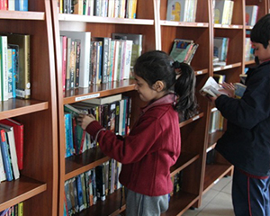

Genesis Global School
Promising Futures
The Genesis Global School was started in 2012 and Genesis provides you with every facility like highly qualified teachers and Tastiest Food.There are 22 sports and some rare sports also like: Golf,Horse Riding and rock climbing the best for your kid is genesis.There are 3 large Fields for activities A big Mph(Multi pourpuse hall).Genesis has also been awarded of the best schools in Ncr. We a large library where we have kids section and elder section then we also have music and Dance facileties.Genesis's aim is to have a great result be champions at Games. The boads we have here are Ib,Cbse,Igse,Myp,Pyp.
Awards

Awards
Recently Mr Tiwari,Paridhi Tiwari and Shihab Mohhamed have been selected in the New york Academy of Sciences.
Library
The Genesis Global school library has 5 parts and they are the kids section the kids book section. Elders book section. Student book section teachers book section some speech practice rooms store room and the Librarian section.
Sports

Genesis Global school also has high equiped sports facilities and the mission vision of genesis also includes the Fitness of students,there are over 22 sports at genesis. We believe at a young age a student should have his calf and hand mussels strong that is why here at Genesis we focus on fitness too.
Princple
Our director is David brazue
SCHOOL NEWS
-
Inter House Debate to happen soon!
To make It feel like we’re still in school Mr. Tiwari and some teachers are organizing a debate which will be held before the Christmas break cheer up your housemates to participate and get Points for there houses. The Houses: VALOUR PEACE JUSTICE FAITH
-
The winter Break

Genesis’s winter break will start soon when Christmas and New year spirts will be up. The break starts on 22 December. The Inset for teachers will still be there.